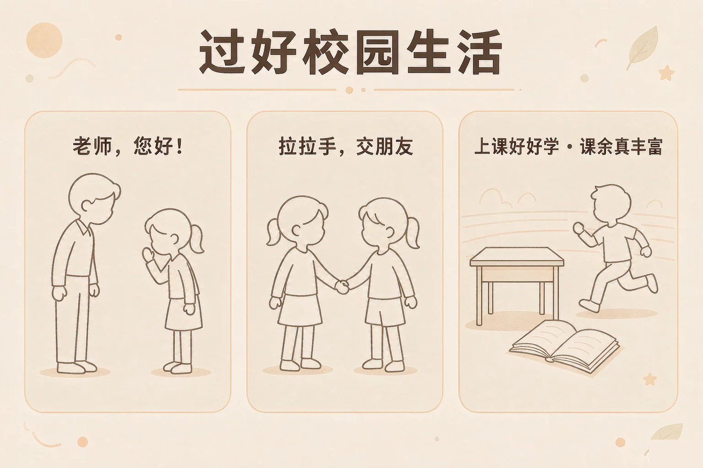
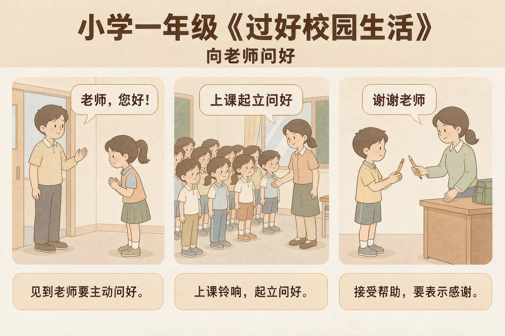
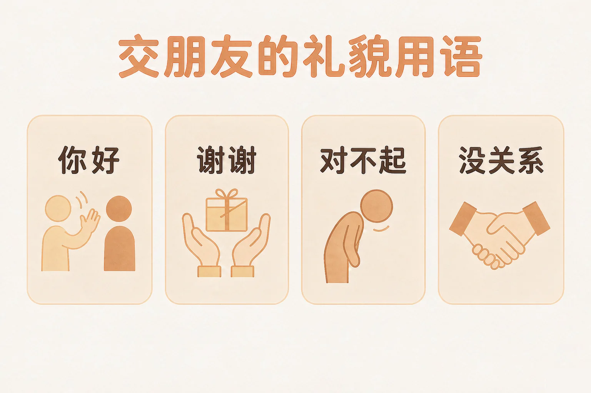

Gallery
v1.0.0 · skill v7.22.0
小学一年级 · 中华优秀传统文化
和老师、和同学在一起的时候，话该怎么说、事该怎么做？

选一个你真正想知道的问题，后面的活动都会围着它转。
选择或输入后，这节课会围绕你的问题展开。
先凭直觉选一个，选完立刻看到解释——错了也没关系，正好知道要重点听哪里。
1. 早上走进教室，看见老师，怎么做比较合适？
走上前问一声好，老师心里暖暖的，一天的开头都亮了起来。错因提醒：有人误认为「问好是小事，做不做都行」——正是这句小事，让老师和同学知道你心里有别人。
2. 我想借同桌的橡皮用一下，怎么说更好？
先问一句「请问」，同桌会觉得自己被尊重，很愿意借给你。错因提醒：常见错误是把「想要」和「直接拿」搞混了——先说一句请问，事情就顺了。
3. 我不小心碰倒了同学的水杯，下面哪个做法更好？
承认是自己不小心，再说一句对不起，同学心里那点不痛快很快就过去了。错因提醒：容易误认为「只要不是故意的就不用说对不起」——别人在意的不是故不故意，而是你有没有把这件事放在心上。
为什么要学这一课？
我们已经知道，遇到不认识的事情可以问老师，老师也会帮我们（And）；可是有的同学看见老师不敢说话，老师帮了忙也不知道该说什么，明明心里挺感谢，话却没说出来（But）；所以这节课就来学一学，和老师说话的时候，那几句最简单的话该怎么讲（Therefore）。
敬爱老师，不需要做很大的事。它就藏在三句很短的话里，每一句都只要一两秒钟。

🔍 深层理解 换个角度再看一遍这件事，看看能不能说出背后的原理。
看见它：敬爱老师不是一句口号，它就是三个能看见的动作：走过去、抬起头、把话说出来。
解释它：为什么一句问好能让老师高兴？因为老师一天要面对很多同学，一句问好是他收到的回应——他知道自己被看见了。
迁移它：回到家里也一样：出门说一声我去上学啦，回家说一声我回来了，家里人帮了忙说一声谢谢。地方换了，话没变。
先点一件你今天可能遇到的事，再从三个做法里选一个。选完会告诉你，这样做了以后老师和同学心里是什么感觉。
先点一件今天可能遇到的事。
交朋友不靠什么特别的法子，就靠几句话。这几句话谁都会说，难的是在该说的时候说出来。
想和别人做朋友
走过去，打个招呼，说一句「你好，我叫……」；问问他叫什么名字；再邀请他一起玩。
想用别人的东西
先说「请问，能借我用一下吗」；用完了说谢谢，还要记得还回去。
做错了事
说一句「对不起」，再动手把事情补回来。帮别人一起收拾，比只说一句话更有用。
答应过的事
说到就要做到。真的忘了，就老实说一句对不起，再约好什么时候补上——这就是讲诚信。

有的同学误认为「说对不起很丢人」。其实肯说对不起的人，才是敢担当的人；而且说完对不起，还要动手把事情补回来，这才算说完整。
🔍 深层理解 换个角度再看一遍这件事，看看能不能说出背后的原理。
比较它：同一件事，两种说法：一句「请问，能借我用一下吗」，和一句「哎，给我」。差别不在声音大小，而在有没有把对方放在心上。
解释它：为什么礼貌的话有用？因为它把选择权交给了对方——先问一句，别人就有机会说愿意，也有机会说不愿意。
迁移它：在家里、在公交车上、在小区里，这几句话一样管用。你希望别人怎么对你说话，就先那样对别人说话。
先点一件发生在校园里的事，再看看两种说法。选一种，读一读同学心里是什么感觉。
先在上面点一件事。
情境：小语今天在班里遇到了四件事。请你帮他一件一件想清楚，该怎么说、怎么做。
有的同学误认为「不说话、不惹事就是个好孩子」。其实同学摔倒了不扶、同桌找东西不帮、有话想说不说，别人也会觉得有点孤单。真正友善的人，是该开口的时候开口。
说给同桌听：小语这四步里，哪一步你自己已经做到了？哪一步还想再练一练？
先凭直觉选一个，选完立刻看到解释——错了也没关系，正好知道要重点听哪里。
1. 下面哪句话说得对？
先问一句，是把选择的机会交给对方，这是对别人的尊重。错因提醒：常见错误是误认为「只要还回去就不算错」——别人在意的，是有没有先问过他。
2. 我不小心把同学的作业本弄湿了，下面哪个做法更好？
说对不起，再动手把事情补回来，这才是说完整的一句话。错因提醒：容易搞混「不是故意的」和「不用负责」——不是故意的，也要说对不起、也要帮忙补回来。
3. 我答应了同学，明天带一本图画书给他看，可是第二天忘了。下面哪个做法更好？
答应过的事要做到；真的忘了，就老实承认，再补上。说实话的人，别人才会一直相信他。错因提醒：有人误认为「撒个小谎就过去了」——一个谎要接上另一个谎，心里会很累，诚实反而最轻松。
先点一条做法，再点它应该进的筐：上课的时候要做的放一边，课余时间可以做的放另一边。
先在上面点一条做法。
分完之后，想一想：
课余时间你最喜欢做哪一件事？和谁一起做？把它写下来，明天讲给同桌听。
先凭直觉选一个，选完立刻看到解释——错了也没关系，正好知道要重点听哪里。
1. 班里来了一位新同学，一个人坐在座位上，你会：
一句你好，就能让新同学知道自己是被欢迎的。错因提醒：别把「他没说话」当成「他不想交朋友」——先打个招呼，再看他怎么回应，这样更公平。
2. 课间我不小心说了一句让同桌不高兴的话，说完就发现了，你会：
发现自己说错了，越早说对不起越好，事情不会拖大。错因提醒：常见错误是误认为「他不说就说明没事」——有些难过藏在心里，说出来别人才能放下。
3. 班里要出黑板报，老师问谁愿意帮忙，你会：
班里的事大家一起做，自己出一份力，这就是爱护集体。做得不完美也没关系，老师和同学会帮你。错因提醒：有人误认为「做不好就别参加」——集体的事情，重要的是愿意一起做，不是一开始就做得好。
还要记牢一件事：这几句话谁都会说，难的是在该说的时候说出来。今天先挑一句试试——比如明天早上走进教室，主动跟老师说一声「老师，您好」。
给别人讲一遍：请用「问好、请问、对不起」这三个词，说清楚你今天在班里做对的一件事。
再动一动手：写一写你打算明天先做到的那一句话，写在纸上，放学带回家给家里人看看。
三层练习，做完第一、二层就算通关；第三层留给愿意继续探索的同学。
⭐ 基础巩固（必做）
⭐⭐ 能力应用（必做）
⭐⭐⭐ 迁移挑战（选做）
左边是学它之前要先会的，右边是学会之后可以继续探索的，下面是同一领域的伙伴知识。
图谱正在加载：首次进入需下载知识索引（约 1–3 秒），加载完成后本行会自动消失。